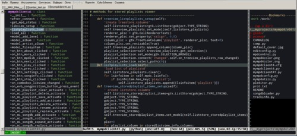
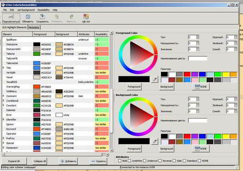
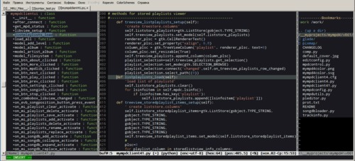

Цветовые схемы в Vim
Про vim написано столько, что трудно себе представить, что какие-то темы остались неосвещёнными.Ан нет… Есть кое-что о чём написано совсем немного.Восполняем пробел. Я надеюсь что эта заметка понравится вимоводам и вимоманам.
Речь в этой заметке пойдёт о цветовых схемах. Vim поддерживает синтаксическую подсветку для самых разнообразных файлов, начиная от всяческих конфигов, и заканчивая языками программирования(в том числе и довольно редкими).
Цветовых схем для vim создано довольно много(довольно большая коллекция находится здесь), но большая часть из них мягко говоря сильно напрягает взгляд и поражает своей бессмысленной пестротой, а среди сравнительно эргономичных тем с правильным подбором цветов часто появляется другая проблема. Проблема эта заключается в том, что авторы используют свои цветовые схемы с небольшим набором файлов.
Кто-то пишет код на C, его цветовые схемы замечательно отображают именно исходные тексты, а при попытке, например, редактировать html появляются странные цвета или текст местами становится невидимым. Другая проблема заключается в том, что разные плагины используют разные элементы цветовой схемы и иногда возникают довольно раздражающие цветовые коллизии. Так довольно удачная схема ego при установке популярных плагинов NERDTree и Tagbar даёт раздражающий красный и розовый цвет в заголовках.

А это, между прочим, довольно старая и аккуратно сделанная схема- зачастую просто автор не может заранее проверить все цвета для всех возможных случаев.
Редактировать цветовые схемы вручную довольно трудоёмко — сначала нужно разобраться: какая переменная используется для кодирования элемента. Затем нужно найти подходящий цвет и задать его код в формате RGB. После этого нужно установить цветовую схему для vim и посмотреть результат. Для решения этой проблемы есть несколько вариантов.
Во-первых это плагин ColorSchemeEditor. Он требует сборки vim с поддержкой языка программирования python и установки pygtk. Для ОС Linux как правило python и pygtk обычно присутствуют на установочных dvd или легко находятся в репозиториях, что же касается семейства ОС Windows XP/Vista/9, то и тут в общем нет проблем — нужно просто установить нужное взяв инсталляционные пакеты с сайтов разработчиков.
С помощью этого плагина можно изменять цвета и видеть все изменения сразу в окне Vim.

Таким образом создание или коррекция цветовой схемы становится интерактивным процессом.
С помощью этого плагина я довольно легко исправил досадные цветовые огрехи схемы ego и затратил на это не более пары минут. Мне не пришлось читать описание синтаксиса для задания цветов, я просто заменил неудачный цвет и сохранил схему в новый файл.

Другой способ создания цветовых схем -это web-сервис VimTax. Это вполне себе графический редактор в браузере. Главный недостаток этого сервиса-невозможно загрузить свои цветовые схемы для редактирования. За основу можно взять только стандартные схемы, которые уже хранятся на сайте.Зато сам процесс создания цветовой схемы вполне нагляден — можно выбрать элемент оформления, задать цвет и сразу увидеть результат.
А вообще-то правильный подбор совместимых цветов давно реализован в виде алгоритмов(пример работы подобных алгоритмов -http://www.colorjack.com/sphere/). Поэтому если не нужен художественный результат, то может быть генератор совместимых между собой цветов как раз и является решением проблемы.
Sweyla's Color Theme Generator -это как раз тот самый «автопилот», который умеет случайным образом генерировать цветовые схемы для vim(и не только, а также для emacs и др.). Можно поиграться немного и выбрать одну из случайный тем. Может они и не будут слишком оригинальны, но сохранение зрения и более-менее читабельный вид будет гарантирован.
Cсылки на ресурсы, на тему vim color schemes
VimTax -A GUI to make your non-GUI editor all pretty and stuff.
http://www.vimtax.com/
Удобный редактор цветовых схем в виде web-сервиса.
Sweyla's Color Theme Generator
http://themes.sweyla.com/
Случайным образом генерирует цветовые схемы.
Vim Color Scheme Test.
http://code.google.com/p/vimcolorschemetest/
Большая коллекция тем и демонстрация.
ColorSchemeEditor
http://code.google.com/p/vimcolorschemetest/
Плагин-редактор цветовых схем(python+gtk)
И еще одна ссылка не про vim, а на сервис подбора цветов.
http://www.colorjack.com/sphere/